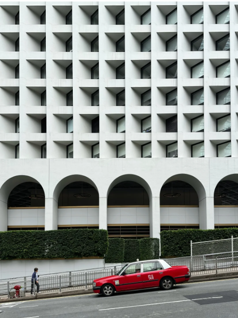
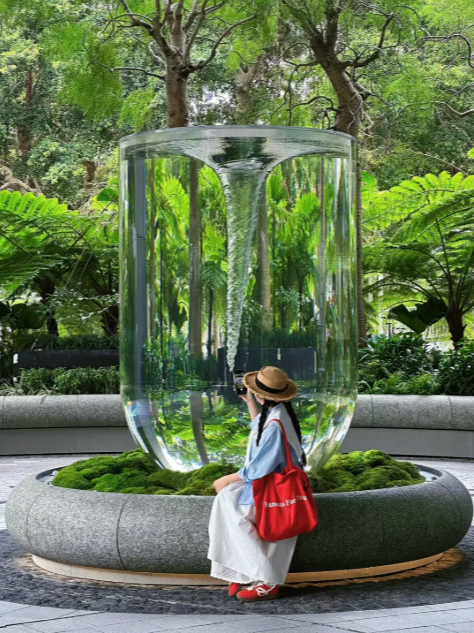
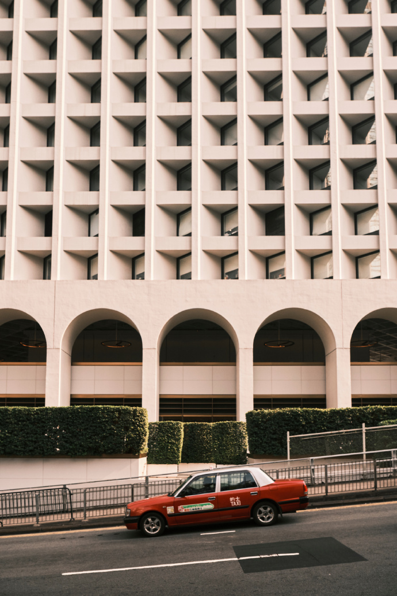

4. 中环 - 石板街 (砵典乍街)
Transport
从中环街市步行约3分钟
中环站J2 口：美利大厦，对着大厦中间，等一辆红色出租车闯入画面
中环J2口：旋转水涡，导航 The Henderson
Photo tips
站在石阶上回眸，两旁是老旧铁皮屋，港味十足
Nearby food
-
Netizen photos


Reference photos

从中环街市步行约3分钟
中环站J2 口：美利大厦，对着大厦中间，等一辆红色出租车闯入画面
中环J2口：旋转水涡，导航 The Henderson
站在石阶上回眸，两旁是老旧铁皮屋，港味十足
-


